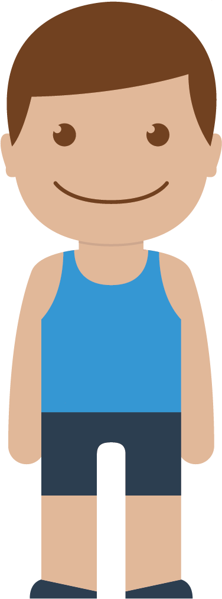

BETTER POSTURE!
Sitting all day is bad for you. I'll remind you when to get off your chair.
You should stand up
and take a micropause in
...
restart timer

Also good to remember when sitting...
1
Eye level even with top of monitor
2
Knee angle at 90 degrees
3
Heels on the floor
4
Sit tall